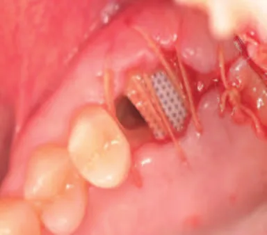
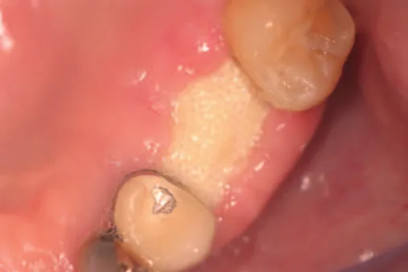

نسخه استخراجشده؛ ترجمه یا تأیید علمی انجام نشده است. وضعیت: captured
در بحث عوارض پیوند، علتهای اکسپوز ممبران را یکییکی مرور میکنیم. و نکته این است که هر چهار مسیر قابل پیشگیریاند.
۱. آمادهسازی ضعیف فلپ و نکروز بافت — که به اکسپوز کامل ممبران انجامیده است.
۲. نبود بستهشدن بدون کشش — همراه با فشار پروتز موقت. این شایعترین علت اکسپوز ممبران در امتداد خط برشِ بازشده است: بخیهای که زیر کشش است، بافت اطرافش را کمخون و نکروز میکند.
۳. نزدیکی حاشیهی ممبران به خط برش — دربارهی یک مورد بالینی: «حاشیهی ممبران احتمالاً بیشازحد به خط برش نزدیک است و میتواند به مشکلات باز شدن خط برش بینجامد».
۴. سوراخشدن ممبران هیدراته زیر کشش — سرِ باریک پیچ تثبیت، ممبرانی را که زیر کشش است از زیر سوراخ میکند و بعد از مخاط نازک رویش بیرون میزند. ممبرانهای کلاژنی وقتی مرطوب میشوند نرماند و اگر فشاری روی ممبران هیدراته بیاید مستعد سوراخشدن و پارگیاند، در حالی که AlloDerm GBR در برابر سوراخشدن حین ترمیم بسیار مقاوم است.
و مهمترین جملهی این بخش: «رهاسازی کافی فلپ در اطراف محلهای پیوند استخوان، حیاتیترین گام برای بستهشدن بدون کشش و موفقیت قابلپیشبینی پیوند است.»
به واژهی «حیاتیترین» دقت کن. در میان دهها متغیرِ این بحث، فقط یکی برجسته میشود — و آن انتخاب ماده یا ممبران نیست؛ رهاسازی فلپ است.
و روش اجرایش: پس از دیسکسیون رهاسازی پریوستیال با قیچی تیز، فلپ میتواند آزادانه روی محل پیوند کشیده شود. پریوست لایهای متراکم و بیکشش است؛ یک برش کمعمق در آن، الیاف کشسان زیرین را آزاد میکند. معیار کافی بودن: فلپ دستکم ۵ میلیمتر از لبهی مقابل فراتر برود.
و توصیف کامل مسیر موفقیت: «یک مورد موفق با برش شروع میشود، با بازتاب درست فلپ همراه با لایهی پریوستیال سالم ادامه مییابد، با جایگذاری درست ممبران پیش میرود، و با بستهشدن بدون کشش فلپ کامل میشود.»
چهار مرحله، و اکسپوز میتواند از هر کدام شروع شود.
طراحی برش که خسارت را محدود میکند: برش پاپیلا-حفظکن با رهاسازیهای عمودی که بهسمت جانبی و دور از محل حیاتی پیوند میچرخند — و همین احتمال آسیب به پیوند را در صورت باز شدن خط برش محدود میکند.
یعنی طراحی برش دو کار میکند: احتمال باز شدن را کم میکند، و اگر باز شد، خسارتش را محدود میکند.

دربارهی پیامد اکسپوز دو گزاره هست که در نگاه اول متناقض بهنظر میرسند. هر دو را باید با هم فهمید.
جملهی اول — هشدار: «هر زمان که محل پیوند در حال ترمیم در معرض فلور دهان قرار گیرد، نوعی تغییر مخرب در حجم نهایی محل پیوند و در یکپارچگی کلی آن رخ خواهد داد.»
جملهی دوم — تعدیل: در یک مورد بالینی، اکسپوز گستردهی ممبران AlloDerm با شستوشوی کلرهگزیدین نگهداری شد و بافت بهتدریج رویش را پوشاند: «اکسپوز در این مورد اصلاً حجم نهایی پیوند را به خطر نینداخت.»
پس چگونه هر دو درستاند؟ چون «نوعی تغییر» با «شکست» یکی نیست. اکسپوز همیشه هزینه دارد، ولی هزینهاش میتواند از ناچیز تا از دست رفتن کل پیوند متغیر باشد — و آنچه این طیف را تعیین میکند، نوع ممبران، وسعت اکسپوز، و مدیریت پس از آن است.
مدیریت اکسپوز — بر پایهی نوع ممبران:
• d-PTFE اکسپوزشده باید با شستوشوی کلرهگزیدین و بهداشت دقیق اطراف محلهای اکسپوز حفظ شود — دستکم ۶ هفته پیش از برداشتن؛ منافذ ریز d-PTFE (کمتر از ۲ میکرون) راه باکتری را از خود ممبران میبندند. اگر محل عفونی شد، ممبران غیرقابلجذب پیش از پیشرفت عفونت خارج میشود.
• AlloDerm رفتار متفاوتی دارد: «ممبران AlloDerm اجازه میدهد محل اکسپوز حفظ شود در حالی که بافت بهآرامی روی ممبران اکسپوزشده را میپوشاند.»
این تفاوت مهم است: در یکی منتظر میمانی و تمیز نگه میداری؛ در دیگری بافت خودش کار را تمام میکند.
• و در باز شدن خط برش بهطور کلی: بیمار باید تحت پروتکل شستوشوی کلرهگزیدین قرار گیرد تا محل پیوند تا کامل شدن گرانولاسیون تمیز بماند. خط برشِ بازشده را دوباره بخیه نکن؛ لبههای در حال ترمیم تحمل کشش بخیهی تازه را ندارند.
• سر پیچهای اکسپوزشده هم باید با شستوشوی کلرهگزیدین تا ترمیم بافت اطراف نگهداری شوند.
و یک ترکیب که بدترین حالت را میسازد: اکسپوز مش تیتانیوم که با عفونت محل پیوند پیچیده شده. اکسپوز بهتنهایی یک مسئله است؛ اکسپوز بهعلاوهی عفونت، مسئلهی دیگری است.
و پیام امیدوارکنندهی پایان بخش: «با کسب تجربهی بیشتر در مدیریت ظریف بافت و درک حفظ بستهشدن بدون کشش فلپ، مشکلات اکسپوز پیوند و ممبران به رخدادی بسیار نادر تبدیل خواهد شد.»
یعنی این عارضه عمدتاً مهارتی است، نه شانسی.
